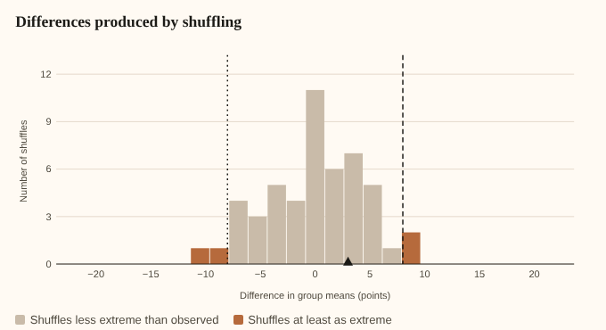
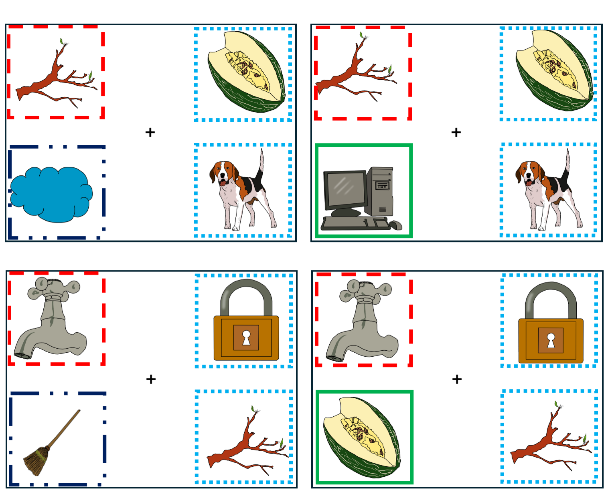
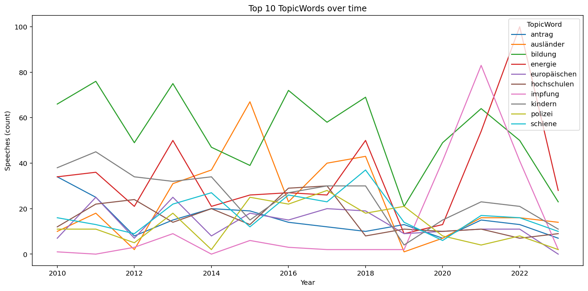
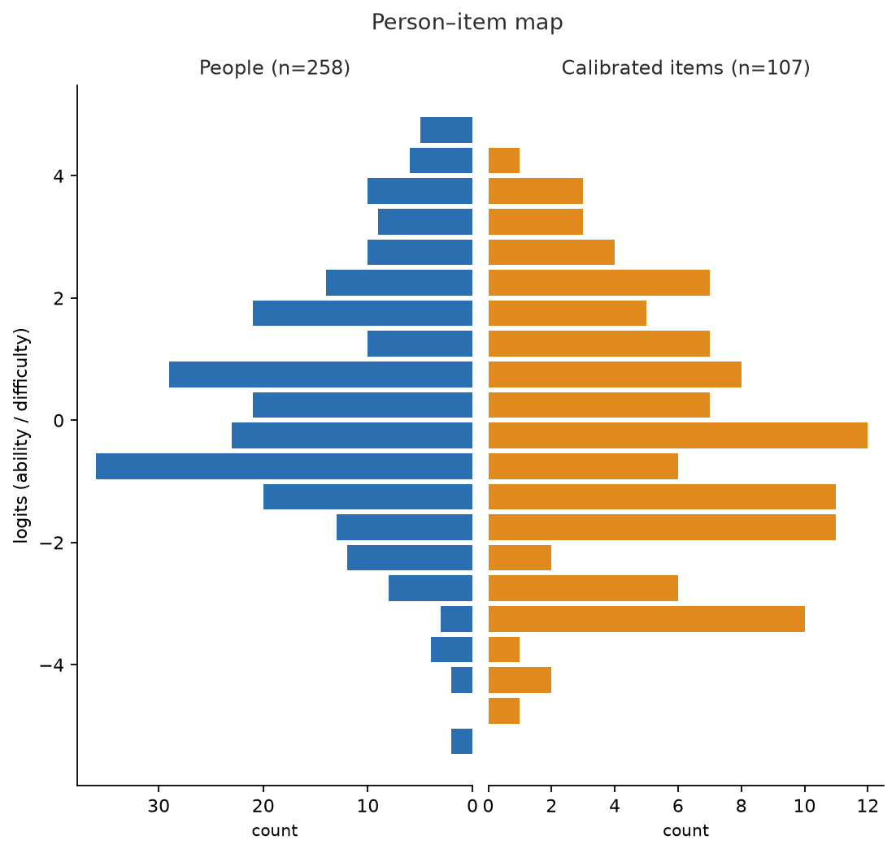

Current research
- Language processing in challenging conditions
- Measuring cognitive effort
- Multilingual data analysis
Projects
Understanding Statistics
Interactive simulations that show where p-values come from: shuffle the data and watch chance build the distribution.

Language class activities
Information gap activities, taken to the next level. Every student gets a different task card, so the game only works if everyone can find what they need from classmates. A simulation checks that for any class size.

Vocabulary Acquisition
Using eye-tracking to gain insights how we learn new words in a foreign language.

Digital Humanities
Using natural language processing to gain insights into texts.

Adaptive Vocabulary Test
An adaptive picture-based vocabulary test that estimates a German learner's level in about five minutes.

German Vowel Test
A pronunciation test that measures a learner's German vowels acoustically and shows which ones need practice.
German A1 Vocab Trainer
A spaced-repetition app for learning German A1 vocabulary through images and audio.
Listening in Challenging Conditions
Collaboration with the NeuroLab at the University of Haifa.
Teaching
Selected papers
How lexical frequency, language dominance and noise affect listening effort – insights from pupillometry
Schmidtke, J., Bsharat‑Maalouf, D., Degani, T., & Karawani, H. Language, Cognition and Neuroscience (online first), 1–14.
Through the pupils’ lens: Multilingual effort in first and second language listening
Bsharat‑Maalouf, D., Schmidtke, J., Degani, T., & Karawani, H. Ear and Hearing.
Pupillometry in language research
Schmidtke, J., & Tobin, S. In: Papesh, M. & Goldinger, S. (eds.), Modern Pupillometry. Springer.
Contact